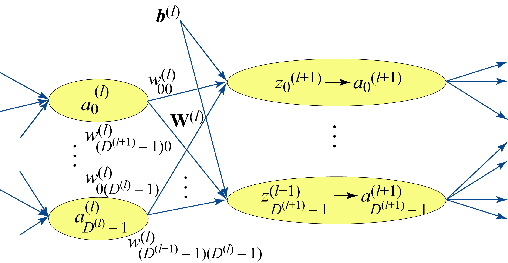
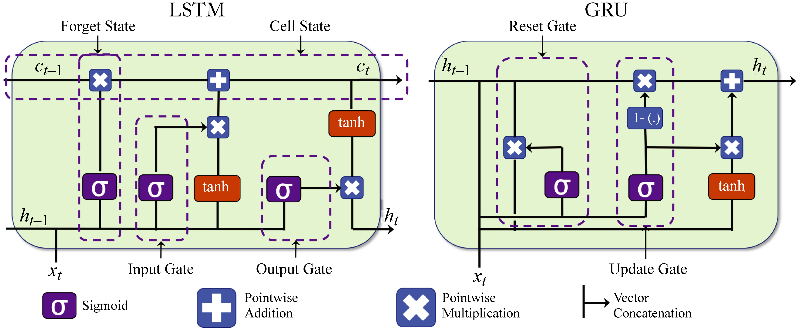

Chapter 2: Building Blocks
There are four main types of NN topologies used in commercial applications: multilayer perceptrons (MLPs), convolution neural networks (CNNs), recurrent neural networks (RNNs), and transformer-based topologies. These topologies are directed graphs with nodes and edges, where a node represents an operator, and an edge represents a data-dependency between the nodes, as shown in Figure 1.5.
A node, also called primitive (short for primitive function), layer, expression, or kernel, is the building block of a topology. While the number of functions developed by researchers continues to grow, for example, the popular TensorFlow framework supports over 1,000 operators, the number of functions used in commercial applications is comparatively small. Examples of these functions are ReLU, sigmoid, hyperbolic tangent, softmax, GEMM, convolution, and batch normalization.
There are three types of compute functions: dense linear functions (e.g., GEMM and convolution), nonlinear functions (e.g., ReLU and sigmoid), and reduction functions (e.g., pooling). A dense linear function is typically implemented as a matrix-wise operator and a nonlinear function as an element-wise operator. A reduction function reduces the input vector to one scalar value.
Matrix-wise operators are compute-intensive and (depending on the hardware and the amount of data reuse) can be compute bound (referred to as Math bound in some GPU literature). Element-wise operators are compute-light and memory bandwidth bound. The inputs to these functions are read from memory, and the results are written back to memory; there is no data reuse.
A common technique to improve the compute efficiency of a model is to fuse a compute-light element-wise operator into a compute-intensive matrix-wise operator. Thus, the intermediate results are not written to and then read from main memory. The element-wise computations happen immediately after the matrix-wise computations while the data is in the registers or the storage closes to the computing unit. Chapter 8 details this and other techniques to improve the efficiency via software optimizations.
In this and the next chapter, we follow a bottom-up approach. In this chapter, we introduce the standard primitives in popular models used at hyperscalers. In the next chapter, we discuss the actual models and applications built using these primitives. Readers that prefer a top-down approach may first read Chapter 3 to better understand the types of models and applications before diving into the building blocks in this chapter. A review of the notation introduced in Section 1.10 can help understand the equations presented in this chapter.
2.1 Activation Functions
An activation function is a nonlinear function applied to every element of a layer's input tensor. The most popular activation function is the rectified linear unit (ReLU). The ReLU function and its gradient are inexpensive to compute. Some models converge faster when the ReLU function is used [KSH12]. ReLU also increases sparsity which may provide computational and memory savings [GBB11].
The main drawback of ReLU is that the gradients are zero for negative activations, and the corresponding weights do not change during backpropagation. This is known as dying ReLU, and has motivated variants of ReLU, such as the Leaky ReLU (LReLU), Parametric ReLU (PReLU), Scaled Exponential Linear Unit (SELU), and the Gaussian Error Linear Unit (GELU) adopted in some attention-based models [HZR+15; KUM+17; HG16]. Another variant is ReLU6, which limits the maximum ReLU output to \(6\) and may improve the statistical performance when using a small numerical representation. These variants do not always result in superior statistical performance, and experimentation is required to assess the benefits.
The \(k\)-Winners-Take-All (\(k\)-WTA) activation function keeps the largest \(k\) activations in a layer and zeros out the reminder ones. A different \(k\) is typically chosen for each layer to maintain a level of constant sparsity ratio (e.g., 80%) across the layers [XZZ20].
The sigmoid and hyperbolic tangent (tanh) activation functions, shown in Figure 2.1, are commonly used in RNN models. Their main drawback is that for large positive or negative activations, the gradient is very small. During backpropagation, the product of various small gradients results in vanishing values due to the limited numerical representations in computers. This is known as the vanishing gradient problem. Variants of RNN models less prone to vanishing gradients are discussed in Section 2.5.
Figure 2.1: Examples of some activation functions \(a_j=g(z_j)\) used in DL workloads.
A benefit of the hyperbolic tangent over the sigmoid function is that it maintains a zero-mean distribution. It should be used over sigmoid except when the desired output is a probability distribution. The sigmoid function is commonly used as the activation function for the output layer in binary classification as the output is between \(0\) and \(1\) and can represent a probability.
The softmax is a generalization of the sigmoid and used for multiclass classification. It uses both element-wise and reduction operators. The output is interpreted as probability distribution with all the values between \(0\) and \(1\) and summing to \(1\). The \(i\)th output value can be computed as:
where \(M\) is the number of classes. The activation input \(\mathbf{z}\) to the softmax layer is called the logit vector or score, which corresponds to the unnormalized model predictions, and should not be confused with the logit (sigmoid) function.
Applying the exponential function to large logits magnifies the numerical errors. Therefore, it is a common practice to subtract the maximum logit \(m\) from all the logits before using the softmax function [BHH20]. The result is mathematically equivalent:
where \(x\), \(y\), and \(m\) are three logits.
2.2 Affine
An affine transformation (also known as fully-connected, feedforward, or GEMM layer) provides a weighted sum of the inputs plus a bias. Figure 2.2 illustrates an affine transformation
and the subsequent nonlinear activation
An affine transformation can be formulated as a general matrix multiply (GEMM) for all the samples in a batch and for all the units in a layer, as shown in the last equation in Section 1.10. An affine transformation is called a linear primitive in DL literature (slightly abusing the term since a linear function should not have a bias).
 Figure 2.2: An affine layer and subsequent nonlinear function.
Using a bias is always recommended even in large networks where a bias term may have a negligible impact on performance; removing the bias has little computational or memory savings. Note that when the affine layer is followed by a batch normalization (BN) layer (discussed in Section 2.6), the bias has no statistical impact as BN cancels out the bias.
2.3 Convolution
Convolution kernels (commonly called filters) are widely adopted in computer vision and used with 2D images, 3D volumetric images, such as MRI scans, and 3D temporal images or video. Tasks where there is a correlation associated with the spatial or temporal proximity in the input values, such as in images, video, and spectrograms (discussed in Section 2.4), can use convolution kernels.
The term convolution has different meanings in the DL and signal processing literature. A convolution operator in the DL literature, and the one used in this book, is a cross-correlation operator between the weights and input activations (the input values to the convolutional layer). Each convolution output value is a dot product of the filter and a subset of the input. The entire convolution output is computed by shifting this filter across all the subsets in the input.
A 1D convolution using one filter follows:
where \(H\) is the length of filter \(w^{(l)}\). This equation can be easily extended to a 2D convolution, which is more common in DL. Typically, multiple filters are used in each layer. Figure 2.3 illustrates \(K\) 1D convolutions and \(K\) 2D convolutions (the biases are omitted to simplify the figure).
Figure 2.3: (a) \(K\) 1D convolutions and (b) \(K\) 2D convolutions. The results across all filters are concatenated across a new dimension. Thus, the output tensor of the \(K\) 2D convolutions has a depth (number of channels) of \(K\).
The output is smaller if the input is not padded or if there is a stride between each filter shift. It is a common practice to extend or pad the input with zeros to enforce that the output size matches the input size (assuming the stride is \(1\)). Another padding technique is using partial convolution, which generates a more fitting padding and is discussed elsewhere [LRS+18].
To demonstrate a 2D convolution, assume, for illustration purposes, a \(6\times 6\) gray-scaled input tensor (in practice, the input is usually much bigger) and a \(5\times 5\) filter, as shown in Figure 2.4. The input is padded with zeros to ensure the output size equals the input size. The upper left value of the 2D output array is the dot product of the \(5\times 5\) filter with the upper-left \(5\times 5\) pixels in the zero-padded input tensor (marked in red). Note that in this book and the DL literature, the dots product's definition includes the aggregated sum of the Hadamard product (element-wise multiplication) of two 2D arrays. The next output value is computed using the next \(5\times 5\) values in the input tensor (marked in green). This pattern continues across the entire input array to compute all the output values.
Figure 2.4: A 2D convolution operation. The top-left value in the output tensor (right) is the dot product of the values in the filter (center) with the upper left values in input tensor (left) in the red square. The input tensor is first zero-padded so the output tensor height and width dimensions equal those of the input tensor. Credit: Joanne Yuan.
An \(H\times W\) color image has \(3\) channels (red, green, blue), also known as feature channels or tensor depth. The dimension of the image is represented as \(3\times H\times W\). The filters have the same number of channels as the input, as illustrated in Figure 2.5. Assuming \(K\) \(5\times 5\) filters with \(3\) channels (represented as \(3\times 5\times 5\)), each one of the \(K\) 2D convolutions is the dot product between a \(3\times 5\times 5\) filter and all the \(3\times 5\times 5\) subsets of the input shifted across the height and width. In 2D convolution, the filters do not shift across the depth (channels). Note that filter sizes are often described only by their height and width; the depth is inferred: it is the number of channels of the input tensor.
Figure 2.5: \(K\) 2D convolutions with an \(H\times W\) input with \(C\) channels. Each filter also has \(C\) channels. The output tensor has \(K\) channels, each one corresponding to the convolution output of each filter with the input tensor.
A convolutional layer has a bank of filters, each detecting different features in the input. To illustrate, suppose the input is a \(3\times 224\times 224\) tensor, and the layer has a bank of \(64\) filters. Each filter produces one \(224\times 224\) output. Each output contains the features detected in the input by the corresponding filter. The aggregated layer output is a \(64\times 224\times 224\) tensor, and all the filters in the next convolutional layer have \(64\) channels.
In practice, a convolution layer typically uses 4D input, filter, and output tensors. The usual way tensors are arranged in (1D) memory, known as the data layout, is as \(NCHW\) or \(NHWC\) for the input tensors, where \(N\) is the number of samples in the batch, \(C\) is the input depth (or equivalently, the number of channels or features), \(W\) is the input width, and \(H\) is the input height. The filters are arranged as \(RSCK\) or \(KCRS\), where \(K\) is the number of filters (also known as the number of output feature channels), \(R\) is the filter height, and \(S\) is the filter width. The \(C\) in \(NCWH\) and \(KCRS\) are the same. Note that \(KCRS\) is sometimes denoted as \(OIHW\) in some literature but not in this book to avoid confusion with the \(H\) and \(W\) used for the input tensor. In the example above, the input has \(NCHW\) dimensions \(1\times 3\times 224\times 224\), the filter has \(KCRS\) dimensions \(64\times 3\times 5\times 5\), and the output has \(\mathit{NK\tilde{H}\tilde{W}}\) dimensions \(1\times 64\times 224\times 224\).
The convolution is computed along seven dimensions: batch size \(N\), output channels \(K\), input channels \(C,\) output height \(\tilde{H}\), output width \(\tilde{W}\), filter height \(R\), and filter width \(S\). It can be implemented naively as seven for loops, as shown in Algorithm 2.1, where \(k\), \(\tilde{h}\), and \(\tilde{w}\), represent the channel, height, and width indices of the output tensor \(\mathbf{Z}\). For simplicity, the stride is assumed to be \(1\). There are more efficient implementations that account for a device's memory hierarchy and parallel computing capabilities [DAM+16].
Algorithm 2.1: Convolution primitive (naive implementation).
z[:] = 0
for n in range(N):
for k in range(K):
for c in range(C):
for h_tilde in range(H_tilde):
for w_tilde in range(W_tilde):
for r in range(R):
for s in range(S):
z[n,k,h_tilde,w_tilde] += a[n,c,h_tilde+r-1,w_tilde+s-1] w[k,c,r,s]
A convolutional filter can be implemented as a GEMM by duplicating some of the input values, as shown in Figure 2.6, and converting the filter into a vector. This is called an \(\mathit{im2col}\)-based convolution implementation. This implementation enables the use of a GEMM library (which is typically well optimized). However, it comes at the expense of additional memory requirements for the input tensor and extra compute cycles to transform the input. Conversely, an affine layer can be represented as a convolution layer where \(C\) is the number of input activations, \(K\) is the number of output activations, \(H=W=1\), and \(R=S=1\) using the \(NCHW\) and \(KCRS\) data layout representations.
Figure 2.6: A convolution operation can be implemented as a matrix multiplication. In this simple illustration, the input is not zero-padded so the output dimensions are smaller than the input dimensions.
In addition, a convolution operation can be implemented in the Winograd domain and also in Fourier domain using the Fast Fourier transform (FFT) algorithm [HR15; LG16]. oneDNN and cuDNN support Winograd convolutions, which may be beneficial for \(3\times 3\) convolutions (the maximum theoretical gain is \(2.25\times\) over regular convolutions). However, using the Winograd transform may reduce the numeric accuracy of the computations, which can impact the overall accuracy of the model [LG16]. Sparsifying the Winograd domain (increasing the number of zero values in the Winograd domain) can lead to higher gains, but also higher accuracy loss [LPH+18]. Winograd requires additional memory and consumes more bandwidth; thus, when sufficient compute is available, the conversion overhead may result in overall slower performance. The FFT primarily benefits large filter sizes, which are uncommon in DL. Therefore, Winograd- and FFT-based convolutions are rarely used in production.
Section 3.2 introduces other variants of convolution, including the \(1\times 1\) convolution, group convolution, and depthwise separable convolutions, when discussing influential computer vision topologies.
2.4 Pooling
Pooling or subsampling reduces the size of the input tensor across the height and width, typically without affecting the number of channels. Pooling often follows a convolutional layer. The common implementation, known as max pooling, is to select the maximum value in a small region. A 2D pooling layer uses \(2\times 2\) nonoverlapping regions and reduces the tensor size by a factor of \(4\), as illustrated in Figure 2.7.
Figure 2.7: A (left) \(1\times 20\times 6 \times 6\) tensor (in \(NCHW\) layout) input into a \(2\times 2\) pooling layer produces a (right) \(1\times 20\times 3 \times 3\) tensor output. Credit: Joanne Yuan.
The main benefit of pooling is that filters after a pooling layer have a larger receptive field or coverage on the original input image. For example, a \(3\times 3\) filter maps to a \(6\times 6\) portion of the input image after one \(2\times 2\) pooling layer. A \(3\times 3\) filter deeper in the model, after five convolutional and pooling layers, maps to a \(96\times 96\) (note that \(3\times 2^5=96\)) portion of the input image and can learn more complex features. Another benefit of pooling is that it reduces the number of operations.
Other forms of pooling include average pooling, stochastic pooling, and spatial pyramid pooling (SPP). Average pooling and stochastic pooling are similar to max pooling. Average pooling computes the average of the values in a small region. Stochastic pooling samples a value based on the distribution of the values in the small region [ZF13]. SPP is used after the last convolution layer to generate fixed-length outputs when the input images are not of a fixed size [HZR+15]. In Section 3.2.3, we provide an example of SPP used in a production model for image segmentation.
2.5 Recurrent Units
There are three main types of recurrent units: vanilla RNN, Long Short Term Memory (LSTM), and Gated Recurrent Unit (GRU) [GSK+17; CGC+14]. Each unit has an internal vector or cell state, sometimes called the memory (not to be confused with a processor's memory). At every timestep, the input may modify this memory.
LSTM and GRU units have soft gates that control how the internal cell state is modified, as shown in Figure 2.8. These gates enable a NN to retain information for several timesteps. LSTM units have the most extensive adoption, comparable performance to GRU units, and typically statistically outperform vanilla RNN units.
 Figure 2.8: LSTM and GRU units have soft gates that control how the memory cell values are modified. Based on [Phi18].
LSTM and GRU units do not use activation functions between recurrent components. Therefore, the gradient does not tend to vanish during backpropagation. An LSTM and a GRU unit contain gates that allow them to control the information flow. An LSTM has a "forget" gate to flush memory cell's values, an "input" gate to add new inputs to the memory cell, and an "output" gate to get values from the memory cell. Multiplying the gate input value with the output value of a sigmoid function (the gate), which corresponds to a number between \(0\) and \(1\), implements this gating. Note the input, output, and memory cell are vectors, and each vector's value uses a unique gating value.
2.6 Normalization
A common ML technique that improves training is normalizing the input data by subtracting the mean of the data and dividing it by the standard deviation. Normalization improves learning in single layer models as each parameter can make similar contributions to the learning, as illustrated in Figure 2.9. It is also beneficial to carefully normalize the inputs of some the layers.
Figure 2.9: The cost space as a function of two weights for (left) unnormalized data and (right) normalized data. Each contour represents a set of weights with equal cost and the minimum is in the inner contour. Normalizing the data results in faster learning because each parameter can make a similar contribution.
The distribution of the inputs to each layer through the network can vary widely, resulting in some gradients that have little impact on the learning process. Normalizing the inputs or outputs of the activation functions improves training stability, enables the training of larger models, and results in faster convergence. The reason is that the gradient of the weights in a given layer is somewhat proportional to the magnitude of the layer inputs. Having gradients with similar magnitudes (1) reduces the effects of exploding and diminishing gradients when backpropagating through a deep network and (2) prevents some of the partial derivatives from skewing the overall gradient in a particular direction.
The most common techniques to normalize activations are batch normalization, batch renormalization, layer normalization, and group normalization, shown in Figure 2.10. In practice, we recommend using batch normalization for non-recurrent models when the batch size is greater than or equal to \(32\) and group normalization otherwise.
Figure 2.10: Different normalization methodologies normalize across different portions of the tensor. The tensor values colored in green are normalized by their mean and variance. Based on [WH18].
Batch normalization (BN) was a breakthrough technique enabling the training of deeper and more accurate models and is widely adopted in production [IS15]. BN can be applied to the input or output of an activation function. Based on empirical data, the latter is recommended and used in the analysis below.
The activations \(\mathbf{a}^{(l)}\) in Layer \(l\) are normalized by the mean \(E\) and variance \(V\) across a batch of samples. Each BN layer has two trainable parameters: \(\gamma\) and \(\beta\) to scale and then shift the normalized activations. These parameters provide flexibility over the amount of normalization in a BN layer to maximize statistical performance. Note that data scientists can remove the bias term in the fully-connected or convolutional layer with no statistical effects as the shift term \(\beta\) effectively cancels out the bias term.
At the end of the training process, the mean and variance for each BN layer are computed using statistics from the entire training set or a large representative subset. These values are fixed and used during serving; they are not recomputed in each serving batch. During inference, the BN output is:
where \(g(\cdot)\) is the activation function, \(\mathbf{W'} = \frac{\gamma}{V}\mathbf{W}\) and \(\mathbf{b'} = (\beta - \frac{\gamma E}{V})\mathbf{1}\). That is, during inference the BN can be incorporated directly in the weights by multiplying them by \(\frac{\gamma}{V}\) in the preceding convolutional or fully-connected layer, and adding the bias \(\mathbf{b'}\) to the activations.
There are two drawbacks to batch normalization. First, it requires training with batches of sufficient samples (usually \(32\) or more) to capture adequate statistics representative of the entire training set. This requirement limits distributed training algorithms when the batch per device is small. Second, batch normalization cannot be used in recurrent layers because the statistics change with each recurrent step, but the BN parameters are shared across all steps. Batch renormalization, layer normalization, and group normalization address these drawbacks.
Batch renormalization constrains the mean and standard deviation of BN to reduce the large difference when the batch size is small [Iof17]. Batch renormalization allows training with small batches.
Layer normalization computes the mean and standard deviation across all the activation values in a layer in a data sample. Therefore, different data samples have different normalization terms [BKH16].
Group normalization is a generalization of layer normalization. It uses the mean and variance across groups of channels, rather than across all the channels [WH18]. The number of groups is a hyperparameter chosen by the user. Both of these methods also include the two trainable parameters as in batch normalization. Empirical results show group normalization works much better than BN for small batch sizes, and only slightly worse than BN for large batch sizes [WH18].
Local response normalization (LRN) square-normalizes the values using the statistics in a small neighborhood [KSH12]. LRN is not a trainable layer. It was used in older models before batch normalization gained adoption.
2.7 Embeddings
An embedding (also known as encoding or thought-vector) is a low-dimensional dense vector representation of a data sample. It is often used as the input to a language or recommender model. An embedding layer maps high-dimensional sparse data to an embedding. To illustrate, suppose a dictionary has 10,000 words. A 10,000-dimensional vector of all zeros except for a one at the corresponding index represents a word. This is called a one-hot vector. Unsupervised learning algorithms, such as word2vec or GloVe, can learn to map a corpus of words to low-dimensional dense representations [MSC+13; PSM14]. Other usages are learning dense representation for persons in a social network or products in a retail business with a large catalog. In images, the activations of the last or second-to-last layer of a CNN model are often used to embed the image.
The embeddings often demonstrate data associations, and vector embeddings of similar words are closer to each other. For instance, using their learned vector representations, \(\mathbf{v}_{\mathit{queen}}\approx\mathbf{v}_{\mathit{woman}} + \mathbf{v}_{\mathit{king}} - \mathbf{v}_{\mathit{man}}\), as shown in Figure 2.11.
Figure 2.11: 3D word embeddings. Word embedding often capture word associations. Based on [Goo20].
2.8 Attention
An attention layer learns how the input vectors influence each output vector, as shown in Figure 2.12. Some attention layers also capture how the neighboring output vectors influence each other. Attention layers are popular in language models to determine the associations between input and output tokens [VSP+17]. A token is a word, a subword, or a symbol, such as a question mark. Attention layers can be computationally expensive as each layer may require computing an attention value for each combination of input and output tokens. This additional computation may increase the serving latency in some workloads beyond what is acceptable for a given application. Nevertheless, using attention layers can improve the statistical performance.
Attention layers are also used in some recommenders to learn a context vector that captures the influence between users. They are also used in image captioning to focus the decoder on the relative parts of the image [CZZ+19; YHG+15]. Attention can improve interpretability. The attention layer may be used to observe and explain how an input feature influences a particular output.
Figure 2.12: Attention-based models capture how each output token is influenced by the all input tokens. The blue and green rectangles are cells corresponding to the encoder and decoder, respectively. To generate the french word suis, the attention weight is the highest for the corresponding English word am. Based on [Syn17].
2.9 Dropout
Dropout is designed to reduce overfitting and may be used in fully connected non-recurrent layers. During training, a percentage of the weights in a layer is ignored (dropped) for an iteration, as shown in Figure 2.13. At each iteration, a new set of weights is randomly ignored, which reduces overfitting by reducing cooperation between the weights. During inference, all the weights are used.
Figure 2.13: (left) Original model before dropout. (right) A percentage of the weights in a layer are dropped during each training iteration.
RNN-based models can use dropout after the embedding layers and in-between RNN stacks. While dropout could be used across temporal units if the same set of weights across all the timesteps are dropped, it is usually not used. CNNs layers typically do not use dropout given that those layers already have few weights.
In practice, normalization techniques are preferred to reduce overfitting, and newer models do not use dropout. Based on empirical evaluations, normalization and dropout should not be jointly used as they have a negative convergence impact [LCH+19].
SLIDE is an extension to dropout [CMF+20]. In dropout, the weights are randomly dropped. In SLIDE, the weights that produce small activations are dropped. The percentage of dropped weights in SLIDE can be 90-95%, whereas in dropout it is usually 50%. Thus, only the most relevant weights are updated in each training iteration. The challenge that SLIDE addresses is predicting which weight vectors produce large activations. SLIDE uses locality sensitive hashing (LSH) to select similar vector weights to the input activation vectors.
SLIDE has a CPU affinity for two main reasons. First, LSH relies on branching, for which CPUs are well optimized. Second, the LSH tables require a large memory capacity, which also favors CPUs. There is ongoing research toward making hashing more efficient on GPUs [AFO18].
Similarly to dropout, SLIDE is primarily beneficial for fully-connected, non-recurrent layers with many units, since these are typically overparameterized and can be heavily sparsified. In particular, for the affine layer into the softmax layer in extreme classification tasks (common in recommender systems), where the softmax has hundreds of thousands of units. Similar to dropout, jointly using SLIDE and normalization is not recommended. Finally, SLIDE is relatively new and has not been adopted in production environments. Further work is needed to facilitate adoption.
In this chapter, we detailed the standard building blocks of topologies used in commercial applications and explained their purpose. These building blocks or layers have different hardware needs. Typically, embeddings layers need large memory and memory bandwidth, convolutional layers need large compute, and recurrent layers need large memory bandwidth. We introduced the concept of a graph with nodes and edges as a representation for a topology. A standard graph optimization technique, detailed in Chapter 8, is to merge dense linear nodes, such as GEMM and convolutions, with element-wise nodes, such as ReLU, to reduce memory accesses and improve performance. We recommended using batch normalization for non-recurrent layers when the batch size is greater than or equal to 32 and group normalization otherwise. Also, normalization is preferable over dropout and both should not be used jointly. In the next chapter, we discuss foundational topologies composed of these building blocks and their applications by hyperscalers.